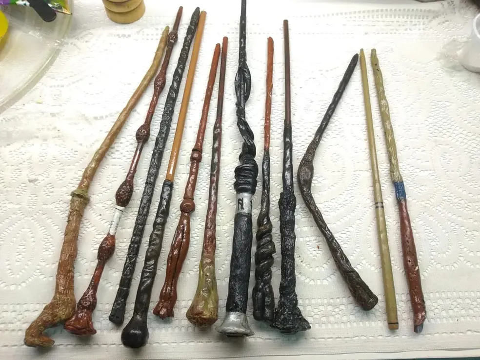

"A varinha escolhe o bruxo...não está claro o porquê."
— Olivaras conversando com Harry Potter"
Uma varinha é um instrumento mágico quase consciente pelo qual uma bruxa ou bruxo (escolhido pela varinha) canaliza seus poderes mágicos. A maioria dos feitiços é feita com a ajuda de uma varinha, mas é possível utilizar feitiços sem varinha. Magia sem varinha é, porém, muito difícil e requer muita concentração e considerável habilidade; apenas bruxos realmente avançados sabem fazer essa forma de magia.[1] Um fato curioso é que, segundo o Wizarding World, na Escola de Magia Uagadou os alunos e docentes geralmente não utilizam varinha
Normalmente, a magia com varinha é usada com um encantamento, mas feitiços não-verbais são também possíveis para bruxos com mais experiência e são melhores para duelos, porque o oponente não terá jeito de saber qual será o feitiço lançado e pode não ser capaz de proteger-se adequadamente a tempo. Varinhas são chamadas de "quase conscientes" porque elas são o mais próximo de animado do que um ser inanimado pode chegar. Provavelmente é porque elas são cheias de magia.
Varinhas são produzidas e vendidas por artesãos de varinhas, o mais famoso deles na Grã-Bretanha sendo Olivaras e também Gregorovitch. Cada varinha é feita com uma madeira específica com uma substância mágica fazendo o núcleo núcleo. Mesmo que a madeira de duas varinhas sejam da mesma árvore, ou o núcleo delas sejam da mesma criatura, não há duas varinhas existentes que sejam iguais. O estudo da história e das propriedades mágicas das varinhas se chama Varinhologia.
